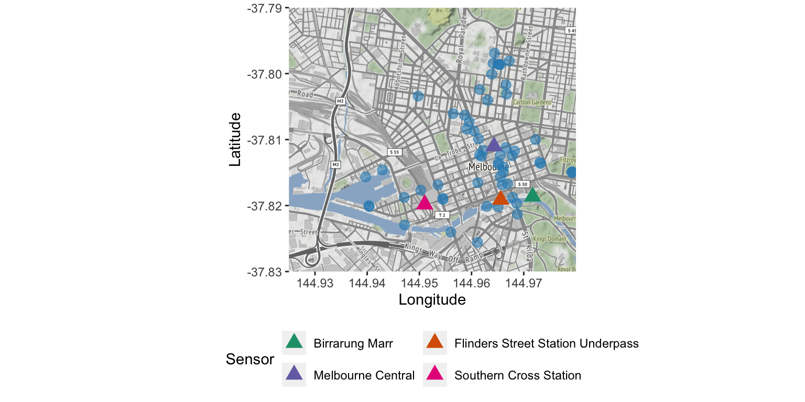
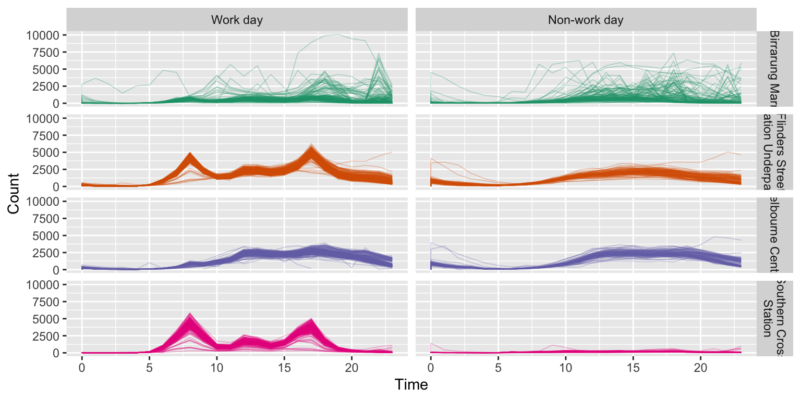
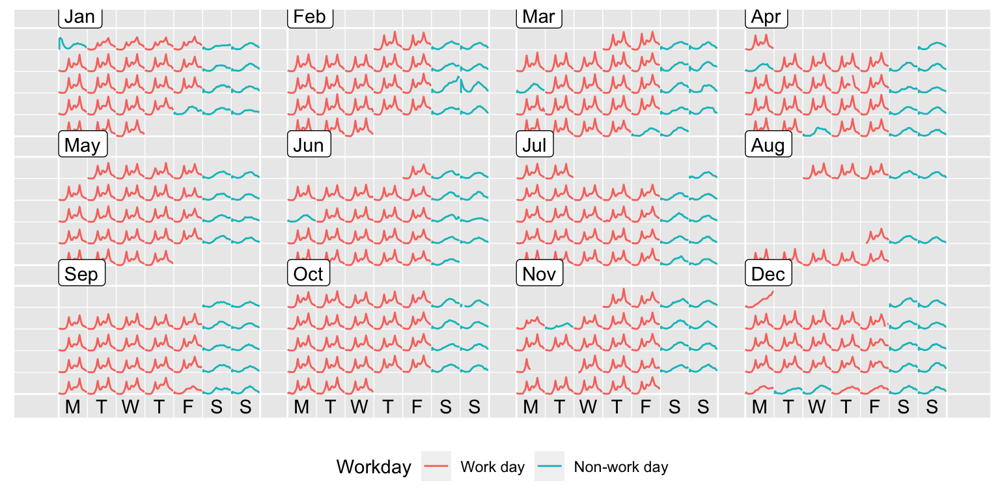

Chapter 30 Pedestrian counting sensor data
30.1 Overview
The City of Melbourne has sensors set up in strategic locations across the inner city to keep hourly tallies of pedestrians. The data is updated on a monthly basis and available for download from Melbourne Open Data Portal. The rwalkr package provides an API in R to easily access sensor counts and geographic locations. In this case study, we focus on the foot traffic of 2018 at 4 sensors.
library(rwalkr)
library(lubridate)
library(purrr)
library(dplyr)
sensors <- c("Southern Cross Station",
"Melbourne Central",
"Flinders Street Station Underpass",
"Birrarung Marr")
start_date <- make_date(2018, 1:12)
end_date <- rollforward(start_date)
peds_2018 <- map2_dfr(start_date, end_date, melb_walk, .progress = TRUE) %>%
filter(Sensor %in% sensors) %>%
mutate(Count = as.numeric(Count))
save(peds_2018, file="data/peds_2018.rda")library(readr)
library(lubridate)
library(dplyr)
sensors <- c("Southern Cross Station",
"Melbourne Central",
"Flinders Street Station Underpass",
"Birrarung Marr")
# Data from https://data.melbourne.vic.gov.au/explore/dataset/pedestrian-counting-system-sensor-locations/export/
ped_loc <- read_csv("data/pedestrian-counting-system-sensor-locations.csv") %>%
dplyr::filter(year(Installation_date) < 2019,
Status == "A")library(ggmap)
melb_bbox <- c(min(ped_loc$Longitude) - .001, min(ped_loc$Latitude) - 0.001,
max(ped_loc$Longitude) + .001, max(ped_loc$Latitude) + 0.001)
melb_map <- get_map(location = melb_bbox,
source="osm")
The map above gives a snapshot of 63 active sensors in 2018 with 4 sensors highlighted. The selection of sensors here covers some human activity types: commuting at Southern Cross Stations and Flinders Street Stations, a mix of shopping and commuting at Melbourne Central, and cultural events around Birrarung Marr.
30.2 Different temporal patterns
peds_2018 %>%
ggplot(aes(x = Date_Time, y = Count)) +
geom_line(size = 0.3) +
facet_grid(Sensor ~ ., labeller = labeller(Sensor = label_wrap_gen(20))) +
scale_x_datetime(date_labels = "%d %b %Y", date_minor_breaks = "1 month") +
xlab("Date Time")We’re primarily interested in exploiting pedestrian patterns at various time resolutions and across different locations. In light of people’s daily schedules, we plot the counts against time of the day, shown in Figure 30.1. At these train stations, two distinct clusters pop out to the viewers.
peds_2018 %>%
ggplot(aes(x = Time, y = Count, group = Date, colour = Sensor)) +
geom_line(size = 0.3, alpha = 0.3) +
facet_wrap(~ Sensor, labeller = labeller(Sensor = label_wrap_gen(20))) +
scale_colour_brewer(palette = "Dark2", name = "Sensor") +
theme(legend.position = "none")Figure 30.1: Counts plotted against time of the day, faceted by sensors.
We further tease out work versus non-work days to explain variations arisen from the discrepancy. Except for Birrarung Marr, the most dominant pattern is driven by the workforce, with commuters’ spikes at 8am and 5pm and a lunch hour rush. These spikes are completely absent on weekends and public holidays. However, non-typical days are yet to be discovered.
library(lubridate)
library(tsibble)
hol2018 <- tsibble::holiday_aus(2018, state = "VIC") %>%
bind_rows(tibble(holiday = "AFL", date = ymd("20180929")))
workday <- fct_inorder(c("Work day", "Non-work day"))
peds_2018 <- peds_2018 %>%
mutate(
Day = wday(Date_Time, label = TRUE, week_start = 1),
Workday = if_else(
(Date %in% hol2018$date) | Day %in% c("Sat", "Sun"),
workday[2], workday[1])
)peds_2018 %>%
ggplot(aes(x = Time, y = Count, group = Date, colour = Sensor)) +
geom_line(size = 0.3, alpha = 0.3) +
facet_grid(Sensor ~ Workday, labeller = labeller(Sensor = label_wrap_gen(20))) +
scale_colour_brewer(palette = "Dark2", name = "Sensor") +
theme(legend.position = "none")
To locate those unusual moments, Flinders Street Station data is calendarised on the canvas, using the sugrrants package. The calendar plot unfolds the day-to-day life in a fresh way. The White Night event saw the 17th night spike in February. Weeks of the data went missing in the middle of August. The underpass shut down from the midday of November 19 until the end of the following day.
library(sugrrants)
flinders <- peds_2018 %>%
dplyr::filter(Sensor == "Flinders Street Station Underpass")
flinders_cal <- flinders %>%
frame_calendar(x = Time, y = Count, date = Date)
gg_cal <- flinders_cal %>%
ggplot(aes(x = .Time, y = .Count, colour = Workday, group = Date)) +
geom_line()
prettify(gg_cal) +
theme(legend.position = "bottom")
30.3 Does the weather make a difference to the number of people walking out?
stations <- read_table(
"https://www1.ncdc.noaa.gov/pub/data/ghcn/daily/ghcnd-stations.txt",
col_names = c("ID", "lat", "lon", "elev", "state", "name",
"v1", "v2", "v3"), skip = 353, n_max = 17081)
oz <- map_data("world", xlim = range(stations$lon), ylim = range(stations$lat))
ggplot(oz, aes(x = long, y = lat)) +
geom_path(aes(group = group)) +
geom_point(data = stations,
aes(x = lon, y = lat), colour = "red", alpha = 0.5) +
coord_quickmap()# melb_stns <- stations %>%
# filter(
# lon > min(ped_loc$longitude), lon < max(ped_loc$longitude),
# lat > min(ped_loc$latitude), lat < max(ped_loc$latitude))
melb_stns <- stations %>%
filter(ID == "ASN00086282") # Melbourne airport
library(vroom)
ghcn2018 <- vroom(
"https://www1.ncdc.noaa.gov/pub/data/ghcn/daily/by_year/2018.csv.gz",
col_names = FALSE, col_select = 1:4)
melb_ghcn <- ghcn2018 %>%
dplyr::filter(X1 == melb_stns$ID, X3 %in% c("PRCP", "TMAX", "TMIN")) %>%
rename_all(~ c("station", "date", "variable", "value")) %>%
mutate(date = ymd(date), value = value / 10) %>%
pivot_wider(names_from = variable, values_from = value) %>%
rename_all(tolower)
write_rds(melb_ghcn, file = "data/melb_ghcn.rds", compress = "gz")Time of day and day of week are the predominant driving force of the number of pedestrian, depicted in the previous data plots. Apart from these temporal factors, the weather condition could possibly affect how many people are walking in the city. In particular, people are likely to stay indoors, when the day is too hot or too cold, or raining hard. Daily meteorological data as a separate source, available on National Climatic Data Center, is used and joined to the main pedestrian data table using common dates. Binary variables are created to serve as the tipping points and avoid multicollinearity issues for modelling later, rather than the original numerics.
melb_ghcn <- read_rds("data/melb_ghcn.rds")
high_prcp_fct <- fct_inorder(c("none", "rain"))
high_temp_fct <- fct_inorder(c("not", "hot"))
low_temp_fct <- fct_inorder(c("not", "cold"))
melb_ghcn <- melb_ghcn %>%
mutate(
high_prcp = ifelse(prcp > 5, high_prcp_fct[2], high_prcp_fct[1]),
high_temp = ifelse(tmax > 33, high_temp_fct[2], high_temp_fct[1]),
low_temp = ifelse(tmin < 6, low_temp_fct[2], low_temp_fct[1])
)
peds_weather <- peds_2018 %>%
left_join(melb_ghcn, by = c("Date" = "date"))We are going to fit a Poisson model on hourly counts, regressed on a three-way interactions between Time, Workday, and Sensor, and three meteorological variables. It is an appropriate choice to fit the Poisson model, since the response takes non-negative integers only. All the variables have a significant effect on counts. The coefficients of the weather variables are all negative, meaning that the higher/lower temperature and raining days tend to have lower counts than the other days.
peds_fit <- peds_weather %>%
mutate(Time = as_factor(Time)) %>%
glm(Count ~ Time * Workday * Sensor + high_prcp + high_temp + low_temp,
data = ., family = poisson(link = "log"))
coef(peds_fit)[c("high_prcp", "high_temp", "low_temp")]
high_prcp high_temp low_temp
-0.09710226 -0.07382435 -0.03633938 To examine the goodness of fit for the model, we plot the fitted values against the observed values for the Flinders Street Station, laid out on the calendar again. The pink lines indicate the fitted data. The model performs well in general, excepting for a couple of misfits due to the unusual events we spotted earlier.
30.4 If setting up a coffee business
Melbourne is world-renowned for its coffee culture. Location matters a lot to small business, particularly coffee shops. An ideal site should provide constant streams of potential customers all week around. To help decide which site we open the coffee shop, Flinders Street Station or Melbourne Central, we run a simulation study using the fitted model given the following assumptions:
- At Flinders Street Station, the proportion of pedestrians passing by who will buy a coffee is 0.1 between 7-10am, 0.05 between 10-4pm, 0.01 between 4-8pm. At Melbourne Central, the proportion who will buy coffee is 0.08 between 7-10am, 0.06 between 10-4pm, 0.02 between 4-8pm. No purchases at all other times.
- Each coffee purchase is $4.
- One attendant costs $100/hour. Two attendants is $150/hour. Three attendants is $200/hour and four attendants is $250/hour.
- Each attendant can handle 30 customers per hour. If the number is more than the number the staff can handle, customers will walk out without purchasing.
The compute_profit() calculates the profit based on one set of simulated data given the date-times and the number of attendants for two locations.
compute_profit <- function(date, time, flinders = 1, central = 1) {
peds_sim <- peds_weather %>%
filter(!is.na(Count)) %>%
mutate(.simulated = simulate(peds_fit, seed = 2020)$sim_1)
fl_rate <- c(rep(0, 6), rep(0.1, 3), rep(0.05, 6), rep(0.01, 4), rep(0, 5))[time]
mc_rate <- c(rep(0, 6), rep(0.08, 3), rep(0.06, 6), rep(0.02, 4), rep(0, 5))[time]
peds_sim <- peds_sim %>%
filter(Date == date, Time %in% time)
fl_count <- peds_sim %>%
filter(Sensor == "Flinders Street Station Underpass") %>%
pull(.simulated)
mc_count <- peds_sim %>%
filter(Sensor == "Melbourne Central") %>%
pull(.simulated)
fl_ncustomers <- pmin(round(fl_count * fl_rate, 0), 30 * flinders)
mc_ncustomers <- pmin(round(mc_count * mc_rate, 0), 30 * central)
fl_profit <- fl_ncustomers * 4 - (100 + 50 * (flinders - 1))
mc_profit <- mc_ncustomers * 4 - (100 + 50 * (central - 1))
tibble(time = time, flinders = fl_profit, central = mc_profit)
}With three attendants at Flinders and two attendants at Melbourne Central, earnings and losses are reported for a Thursday on 2018-03-28.
compute_profit("2018-03-28", 7:19, flinders = 3, central = 2)
# A tibble: 13 × 3
time flinders central
<int> <dbl> <dbl>
1 7 160 -18
2 8 160 90
3 9 160 90
4 10 72 90
5 11 92 90
6 12 160 90
7 13 160 90
8 14 160 90
9 15 160 90
10 16 -76 42
11 17 0 70
12 18 -76 70
13 19 -128 34